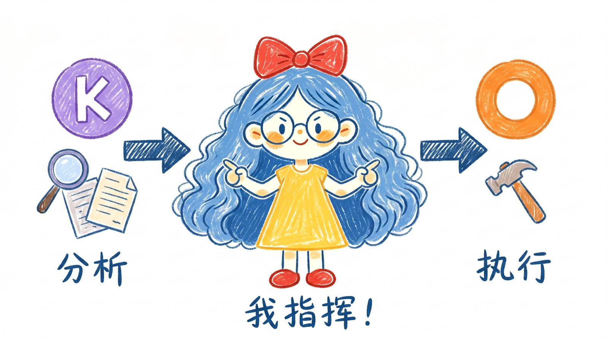
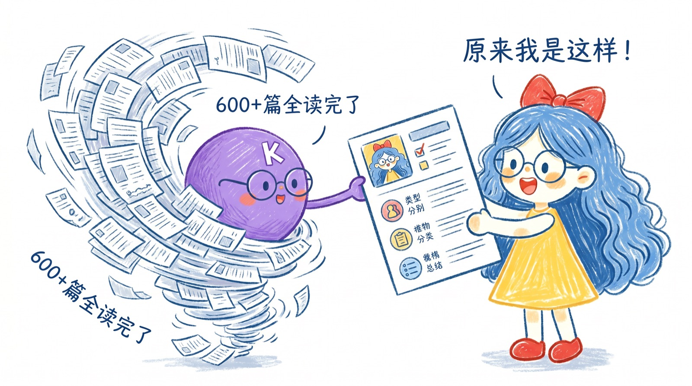
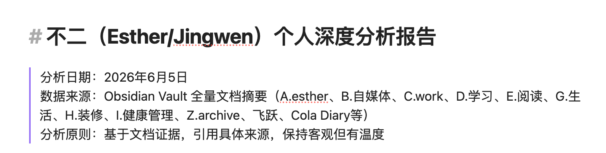
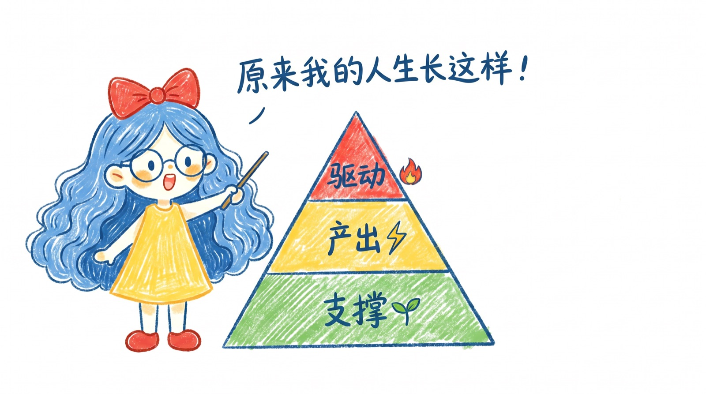
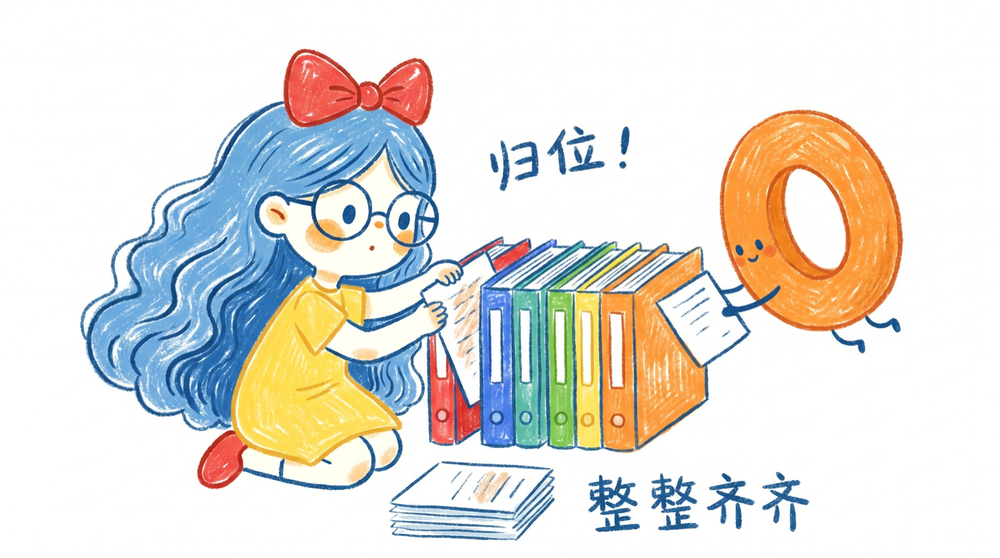
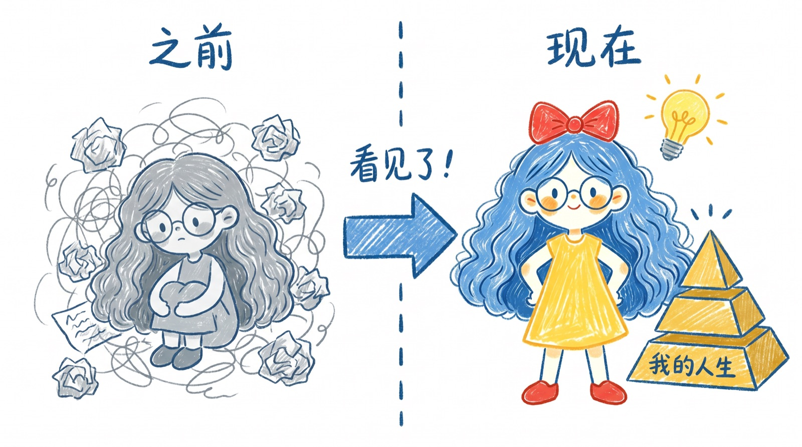

我的Obsidian仓库里有600多个文档,混沌了四个月--直到我让AI帮我"看见自己"。

Kimi分析 + Cola落地 ✨
用结构化的方式"挖掘"心理深处,找到隐藏的模式。让AI读我所有文档,就是让AI帮我看到自己看不到的模式。


↑ Kimi第一次给我的产出我需要你读遍所有我在 Obsidian 里面的文档。这里面有一部分文档是 Agent 写的，所以它们不一定能代表我，但大部分文档以及我跟 Agent 的交流都能代表我。除了打标以外，请不要更改或删除我所有的文档。我需要先看到详细的分析报告之后，我们再一块决定是否要做调整。
暂时先不要做其他的任何改动，你唯一能做的改动就是打标。至于相应的报告、体系以及清单，你就另外写 Markdown 文档给我就行。
我需要你帮我完成几件事：
过期/重复的删掉,仓库瘦身
每篇文档打标签,重新分类
我在做什么、关注什么、薄弱点
产出三层七大系统架构
大多数人改变失败,是因为在旧心理基础上尝试新行为。先看清"我是谁",行动才会自然跟上。
一眼看清"我的人生有哪几块",立刻定位哪里薄弱。
支撑层是地基,产出层是房子,驱动层是你想住的生活。地基不稳,房子会塌。


三层七大系统正式写成主干文档
600多个文件重新归位到对应系统
不追求完美,只追求能转起来
你现在的生活是系统设计的必然输出。想改变行为,改系统。
不是“我要做得多好”，是“我要先转起来”。
每转一圈比上一圈强
设目标→行动→反馈→修正。不需要一次完美，只需要循环能转起来。

我从来没有对自己的人生
有过这么清晰的区分和把控。
以前做了很多的事情,但是从来没有系统性的梳理过,所以也没有去搭建自己的系统。
这一次试图让AI帮我一块去看清自己到底在做些什么,同时也看见自己正在过什么样的生活。